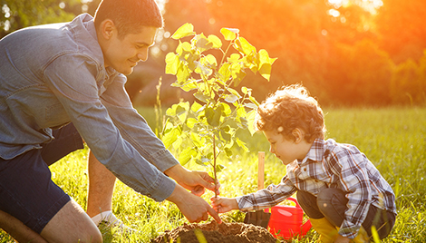

Quizás la más importante de las razones para cuidar el medio ambiente, es que hacemos vida en él. Siendo la tierra nuestro hogar, es responsabilidad nuestra el daño que le hemos causado, así como repararlo. Los asentamientos urbanos se han incrementado a un ritmo nunca antes visto en la historia de la humanidad, lo cual, lógicamente, ha significado una destrucción acelerada de ecosistemas naturales. Es por eso que deben buscarse soluciones para reparar esta destrucción e intentar restaurar el equilibrio medio ambiental.

La tierra provee lo suficiente para satisfacer las necesidades de cada hombre, pero no la avaricia de cada hombre.